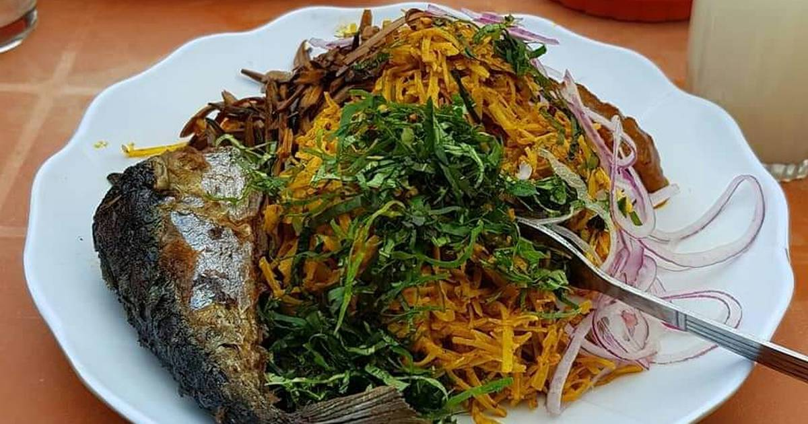

Abacha Recipe
Description
Abacha food is an Igbo food of Nigeria
Abacha is rich in nutrients and nourishes the body
Ingredients
- abacha
- powered potash
- crayfish
- garden egg vegetable
- palm oil
- ugba (ukpaka)
- ehu seeds
- ogiri Igbo (castor seed paste)
- garden egg
- onion
- salt and stock cube
- fish
Steps
- Abacha is the main ingredient, and it is made by boiling and grating cassava tubers.
- Click here for the Steps